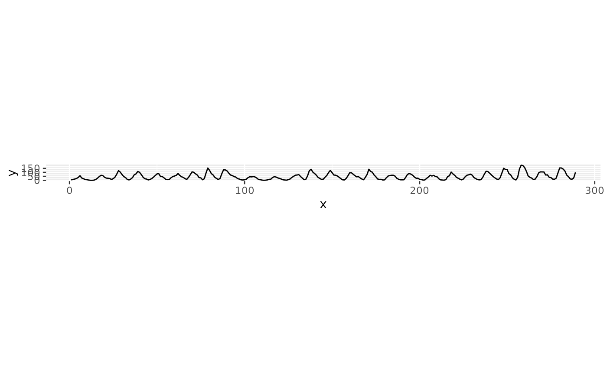

A convenience wrapper around bank_slopes that extracts
x/y directly from an already-specified ggplot, so
you do not have to separately reconstruct the plotted vectors by hand.
It builds plot with ggplot_build, computes
the banking ratio from one layer's fully resolved data (i.e. after
stats, position adjustments, and faceting have been applied), and
returns plot + coord_fixed(ratio = ...).
Usage
bank_plot(
plot,
method = c("ms", "as", "ao", "was"),
cull = FALSE,
layer = 1,
...
)Arguments
- plot
A
ggplotobject.- method, cull, ...
Passed to
bank_slopes.- layer
Integer. Which layer of
plotto extractx/yfrom. Defaults to the first layer.
Value
The plot, with coord_fixed added.
Details
Segments are never averaged across a group or facet panel boundary:
slopes are computed within each combination of group and
PANEL and then combined, so a line plot with multiple series (or
facets) is banked correctly rather than picking up spurious slopes
between the end of one line and the start of the next.
Note that coord_fixed applies a single ratio to
every panel, so faceted plots are banked using the combined data from
all panels rather than a ratio tailored to each one individually.
Examples
library("ggplot2")
x <- seq_along(sunspot.year)
y <- as.numeric(sunspot.year)
p <- ggplot(data.frame(x = x, y = y), aes(x = x, y = y)) +
geom_line()
bank_plot(p)
